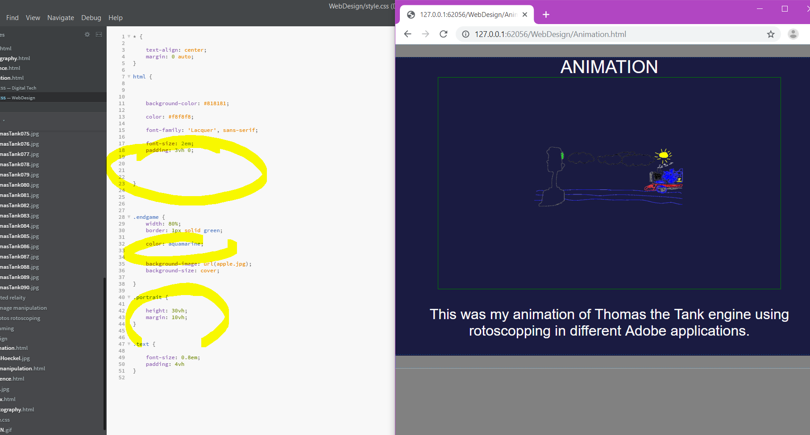
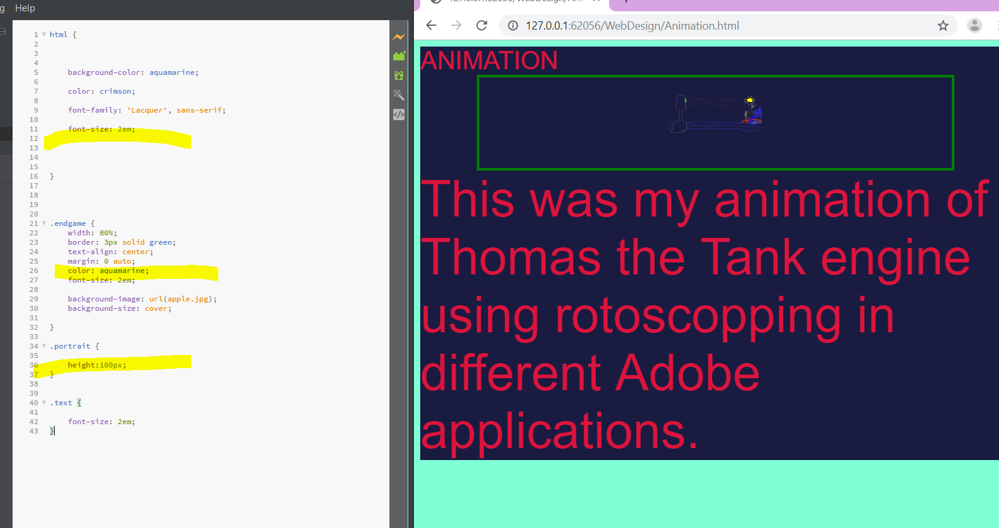

EVIDENCE


This was my animation of Thomas the Tank engine using rotoscopping in different Adobe applications. The animation above which you see is the final product I created and it was made into a gif so it could fit onto this web page. I animated this Thomas the Tank engine with Adobe Animate. I did it at a rate of 12 fps since there were 120 frames and I wanted to do it efficently.